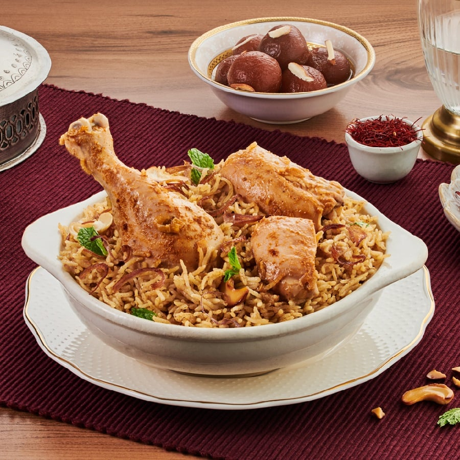

|
Chicken Biryani |
 |
1 cup boiled basmati rice
1/2 teaspoon mint leaves
salt as required
2 tablespoon refined oil
3 green cardamom
2 clove
2 onion
1 teaspoon turmeric
1 tablespoon garlic paste
1 cup hung curd
2 tablespoon coriander leaves
water as required
1 tablespoon ghee
600 gm chicken
1 tablespoon garam masala powder
1 teaspoon saffron
1 tablespoon bay leaf
1 black cardamom
1 teaspoon cumin seeds
4 green chillies
1 tablespoon ginger paste
1 teaspoon red chilli powder
1/2 tablespoon ginger
2 drops kewra
1 tablespoon rose water